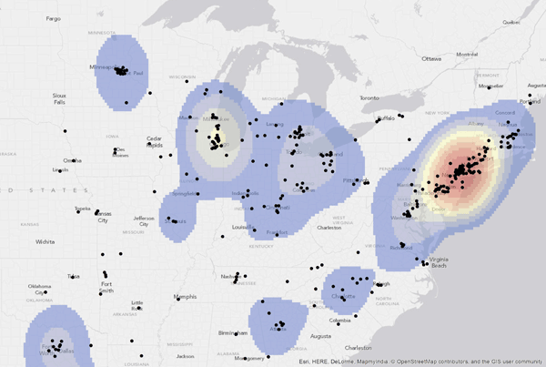
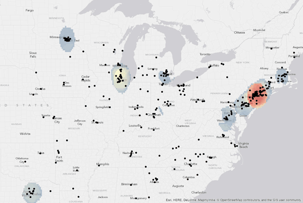
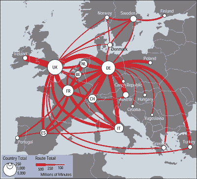
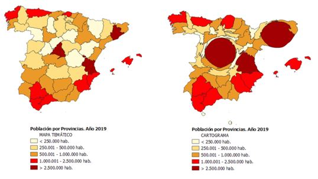
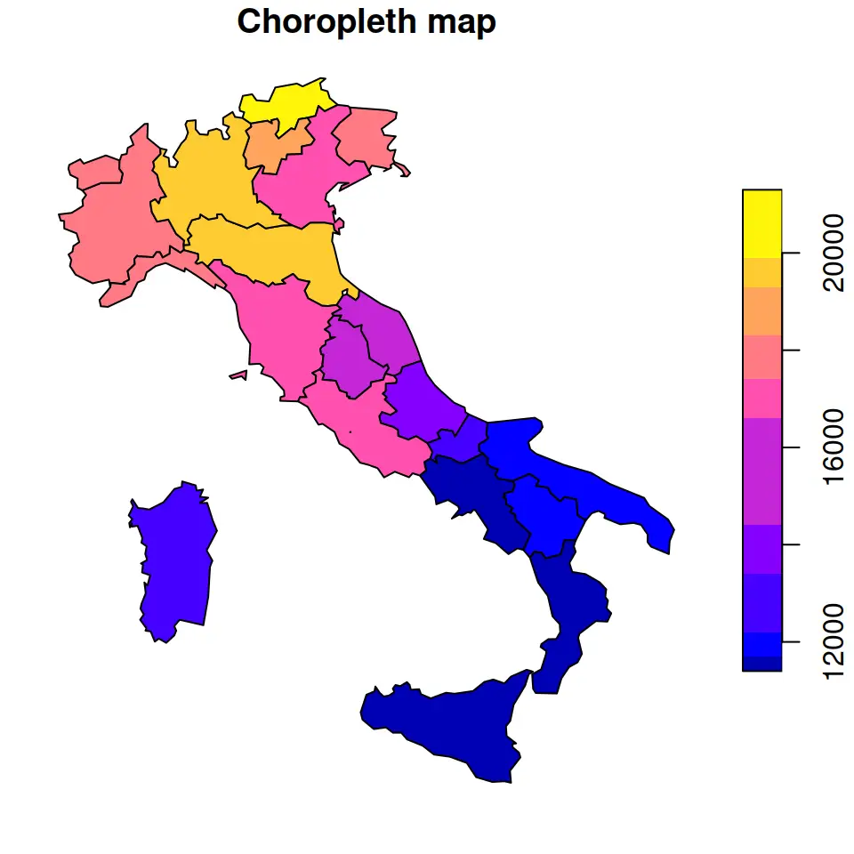

Intro to GIS
File types
Vector and raster data are two fundamental types of spatial data used in Geographic Information Systems (GIS). Vector data represents geographical features as distinct shapes using points, lines, and polygons, each of which can carry detailed attribute information, making it ideal for precise mapping applications like boundaries, roads, and infrastructure networks. It excels in accuracy and detail for discrete data. In contrast, raster data consists of a grid of pixels, each holding a value, effectively representing continuous data. This format is well-suited for environmental analysis, land cover studies, and satellite imagery, as it captures variations over a wide area, such as elevation, temperature, or vegetation. While vector data is preferred for its precision in depicting specific geographic entities and managing related data, raster data is favored for its ability to represent complex, continuous phenomena over large spatial scales.
Vector
Types
Vector data types are primarily categorized into Points, Lines, and Polygons, each with distinct characteristics and uses. Additionally, there are multi-geometry versions of these types, like Multi-Points, Multi-Lines, etc., which offer more complex representations.
- Points: In vector GIS, Points are used to represent discrete locations on the earth’s surface. Each point is defined by a pair of coordinates (e.g. latitude and longitude) and can represent features like the location of a city, a well, or a landmark.
- Lines: Lines are sequences of points connected by straight segments. They are used to represent linear features such as roads, rivers, or utility lines. Lines are characterized by length and direction and can also include attributes like road type or river name.
- Polygons: Polygons are closed shapes formed by a series of connected line segments. They are used to represent areas such as city boundaries, land parcels, or lakes. Polygons have attributes such as area and perimeter and can include additional information like population density or land use type.
- Multi-Geometry Versions:
- Multi-Points: This type represents a collection of points as a single entity. For instance, a Multi-Point could represent a chain of islands or a group of dispersed historical sites.
- Multi-Lines (or Multi-Polylines): These are collections of lines that are treated as a single feature. An example might be the total network of streets in a city or various segments of a long-distance hiking trail.
- Multi-Polygons: This type includes several polygons that are associated but not physically connected, like the different parcels of a dispersed national park or the territories of a country spread over several islands.
Formats
| Extension | File Type | Description |
|---|---|---|
| Esri Shapefile | .SHP, .DBF, .SHX |
Shapefile is a prevalent geospatial file type in GIS software, requiring three mandatory files: SHP (feature geometry), SHX (shape index position), and DBF (attribute data). Optional files like PRJ (coordinate reference system) are also common. |
| GeoPackage | .GPKG |
GeoPackage, a portable and compact format, is ideal for transferring geospatial information. Based on SQLite, it supports vector data, tile matrix sets, and extensions. It’s efficient for storing multiple data layers and a popular alternative to shapefiles for handling larger datasets. |
| Geographic JavaScript Object Notation | .GEOJSON, .JSON |
GeoJSON encodes geographic data structures using JSON. Common in online mapping applications, it represents geographic features like points, lines, and polygons in an open-standard format. |
| Geography Markup Language | .GML |
GML, an XML extension, stores geographic entities as text, including properties, geometry, and spatial reference. It’s similar to GeoJSON but more verbose, offering a human-readable and machine-readable format. |
| Google Keyhole Markup Language | .KML, .KMZ |
KML, developed for Google Earth, is an XML-based GIS format. KMZ, a compressed version, is the standard Google Earth format. KML/KMZ files include geospatial coordinates (WGS84) and altitude (meters). Adopted as an international standard by the Open Geospatial Consortium in 2008. |
| GPS eXchange Format | .GPX |
GPX, an XML schema, describes waypoints, tracks, and routes from GPS receivers. It’s an exchange format, facilitating data transfer across programs. GPX files store coordinates, with optional properties like time and elevation. |
| OpenStreetMap | .OSM |
OSM files, OpenStreetMap’s native format, come from the world’s largest crowdsourced GIS project. They include vector features and are XML-based. The PBF Format is a smaller, more efficient alternative. OSM files are compatible with QGIS for data interoperability. |
Reference: https://gisgeography.com/gis-formats/
Raster
Rasters contain a grid of pixels, where the value used for each grid cell can represent a characteristic such as temperature or landcover. Geographic rasters typically include Geospatial information necessary to correctly project and locate the information in GIS software.
Formats
| Extension | File Type | Description |
|---|---|---|
| American Standard Code for Information Interchange ASCII Grid | .ASC |
ASCII Grid files (ASC) store raster data as text in a grid format. Each cell in the grid is represented by a numeric value (which can be a float), corresponding to the geographic attribute being mapped, such as elevation. ASCII Grid files include a header specifying metadata like cell size, number of rows and columns, and coordinates of the lower left corner. The format is simple and can be generated or edited with a text editor, making it versatile for GIS data storage and exchange. Commonly used as an interchange format, it can be space, comma, or tab-delimited. |
| GeoTIFF | .TIF, .TIFF |
GeoTIFF is a widely used file format in GIS and remote sensing applications, known for its ability to embed georeferencing information within a standard TIFF (Tagged Image File Format). It stores raster images and allows embedding of metadata such as map projections, coordinate systems, ellipsoids, and datums. This embedded geospatial data enables the precise positioning of the image in the correct geographic space. GeoTIFFs are commonly used for storing satellite imagery, aerial photography, and GIS data. They can also be accompanied by additional files, like world files (TFW), for georeferencing. |
Reference: https://gisgeography.com/gis-formats/
Coordinate Reference Systems
Geographic data is intrinsically tied to the earth’s surface and is represented using coordinates within defined Coordinate Reference Systems (CRS). Broadly, these systems fall into two categories: Geographic Coordinate Systems and Projected Coordinate Systems.
Geographic CRSs use a three-dimensional spherical surface to define locations on the earth. They are based on latitude and longitude measurements and are most commonly referenced to the WGS84 datum. While they accurately represent the earth’s curved surface and preserve the true shape and angular relationships of features, distances and areas may not be as accurate, especially over larger areas.
Projected CRSs translate the earth’s three-dimensional surface onto a two-dimensional plane, making it easier to analyze and visualize spatial data. They use a mathematical projection to flatten the curved surface of the earth, which can lead to distortions in shape, area, distance, or direction. Different types of projections are designed to minimize these distortions for specific regions or purposes. For example, some are optimized for preserving area (equal-area projections), while others preserve distances or shapes.
A useful reference website for CRS is EPSG.io: Coordinate Systems Worldwide
Geographic
Geographic Coordinate Reference Systems (CRS) use a three-dimensional spherical or ellipsoidal surface to represent locations on the Earth’s curved surface. Geographic CRSs are based on latitude and longitude coordinates and are useful for global or regional mapping.
- Units: Degrees
- Common Examples:
- WGS 84 (World Geodetic System 1984)
EPSG:4326: A widely used CRS for global mapping and GPS navigation. - NAD83 (North American Datum 1983)
EPSG:4269: A CRS commonly used in North America.
- WGS 84 (World Geodetic System 1984)
Projected
Projected Coordinate Reference Systems (CRS) use a two-dimensional Cartesian coordinate system to represent locations on a flat surface. These CRSs are created by “projecting” the curved Earth onto a flat surface, which introduces distortions, which inevitably requires tradeoffs in distances, areas, or shapes, with different projection systems involving different trade-offs. Projected CRSs are commonly used for local or small-scale mapping appropriate to specific countries or regions of the globe, where locally accurate measurements and comparisons are required.
- Units: Meters (most commonly)
- Common Examples:
- UTM Zone 30N (ETRS89)
EPSG:3035: This CRS is commonly used in Europe (around latitude 30° North). - British National Grid (BNG)
EPSG:27700: This CRS is commonly used in the United Kingdom. - State Plane Coordinate System (SPCS): This CRS is widely used in the United States for local or regional mapping.
- UTM Zone 30N (ETRS89)
Some visual examples
QGIS UI 👨🏽💻
- General layout
- The toolbox
- Extensions / plugins
- Web tiles
💻 Install Quick Map Services (QMS) → load OSM standard
💻 Exercise → Load/Import data from DATOS MADRID Neighbourhoods (.shp); Population (.csv) → Explore data attributes : filter based on date (fecha)
GIS Data Sources
Discovering sources for GIS (Geographic Information System) data is essential for spatial analysis and mapping. There are various official and non-official sources, each offering different types of data suited to specific needs and applications.
Official Sources
- Government Agencies: Agencies such as the US Geological Survey (USGS) and the Environmental Protection Agency (EPA) provide official and reliable GIS data. However, these datasets may reflect governmental priorities and perspectives.
- International Organizations: Organizations like the United Nations (UN) and the World Bank offer global GIS datasets, ideal for international research. They may not always capture local nuances due to their broad scope.
- Local Authorities: City and regional councils supply local GIS data, which is often tailored to specific local government projects and priorities.
Non-Official Sources
- Private Sector: Companies such as ArcGIS Living Atlas, Esri, and CARTO Datawarehouse offer comprehensive, commercially-oriented GIS datasets.
- Specialized GIS Data Portals: Portals like the Harvard Geospatial Library provide access to specialized datasets across various fields.
- Open Data Platforms: Platforms such as OpenStreetMap offer freely accessible GIS data, contributed by a community of users. These datasets might require additional validation due to their open-source nature.
- Space Agencies: Agencies like NASA and the European Space Agency (ESA) provide official satellite imagery, particularly useful for environmental and spatial studies.
- Academic Institutions: Universities often share GIS data derived from research projects. While not officially sanctioned, this data can be valuable but might need adaptation for specific uses.
- Social Media and Crowdsourced Data: Platforms like Twitter and Facebook can be sources of GIS data, reflecting public behavior and trends. This data is not official and requires careful adaptation to account for inherent biases.
- Web Scraping: Involves the automated collection of data from websites. This method is not an official source and the quality of data can vary. It’s useful for obtaining unique, real-time data. Web scraping demands significant technical skills for data extraction and processing. Legal and ethical considerations are important, as scraping can sometimes violate terms of service or data privacy laws.
Purposely Collected Data
Purposely collected data is specifically gathered to meet the objectives of a defined research question or project goal. This type of data is obtained through structured methods such as surveys, experiments, or systematic observations.
Characteristics:
- Tailored Collection: The data is methodically gathered to align closely with the specific needs and aims of a particular study or project.
- Control Over Variables: Efforts are made to control or monitor variables, enhancing the relevance and accuracy of the data.
- Highly Relevant: The data’s targeted collection ensures its direct applicability and relevance to the specific research goals.
Potential Built-in Biases:
- Selection Bias: There’s a possibility of preferentially selecting data that confirms a pre-existing hypothesis, while disregarding contradicting data.
- Researcher Bias: The inclinations or hypotheses of the researcher may inadvertently influence the data collection methods and interpretation.
- Sampling Bias: The methodology for selecting samples could impact the representativeness of the data, potentially leading to skewed outcomes.
Adapted Data
Adapted data is information that was initially collected for purposes other than the current research project but is repurposed or reinterpreted to suit new research needs. This category includes data from existing public databases, prior studies, or information obtained through web scraping.
Characteristics:
- Broadly Collected: Originally gathered for various general or distinct objectives, often from pre-existing sources.
- Varied Sources: Derived from multiple sources, each with unique data collection methods.
- Versatility: Provides the opportunity to apply pre-existing data to new or unrelated research questions.
Built-in Biases:
- Bias of Original Purpose: The initial intent behind the data collection may affect the type and nature of the data, potentially reducing its applicability to new research questions.
- Risk of Contextual Misinterpretation: Lacking the original context, there is a danger of misinterpreting the data when adapting it for different uses.
- Concerns about Data Quality and Completeness: The original data may not fulfill the specific quality or completeness standards required for the new research purpose.
Licenses:
When dealing with data, licenses refer to legal agreements or permissions that determine how the data can be used, distributed, or modified. Different datasets may have different licensing requirements, so it’s important to understand and comply with the specific license terms associated with the data you are using.
Examples:
- Creative Commons (CC) licenses: Standardized licenses that allow creators to choose permissions for their work. Used for creative works like images, music, videos, and written content.
- Open Database License (ODbL): Specifically for databases. Allows users to freely use, share, and modify the database. Modifications and derivative works must be under the same license. Used for open data projects and community-driven data initiatives.
- GNU General Public License (GPL): Copyleft license for open-source software. Allows modification and distribution. Modifications and derivative works must be under the same license. Used for promoting open-source principles and collaboration.
Attribution
Attribution or citation refers to giving proper credit to the original source or creator of the data. Just like when citing sources in academic papers, it’s important to acknowledge the origin of the data you are using. This helps provide transparency, accountability, and recognition to the creators of the dataset.
Privacy Considerations
Privacy considerations are important when working with data, especially if the data contains personally identifiable information or sensitive information. It’s very important to handle and store data in a way that respects privacy laws and regulations. This may involve anonymizing or de-identifying data, implementing security measures, and obtaining consent from individuals whose data is being used.
Please avoid using any and all data containing private or sensitive data unless you first review this and seek approval from faculty. Handling these forms of data comes with numerous steps and safeguards and will generally be strongly discouraged.
Reprojections in QGIS 👨🏽💻
Often times, data from several datasources (or even the same one) comes with different projection systems. Other times it’s a matter of software support or visual preference, but what’s really important is to aim for consolidating all your data layers into the same projection system. This will help with accurate calculations and ‘real’ overlap of layers.
💻 Using Madrid’s neighbourhoods (above) and the toolbox → Search for ’reproject layer’ → Reproject layer to EPSG: 4326 (and others) and save as a different files (or try Geopackage layers) → Restart a new project and load the new layer → See the layer properties of each and how they overlap or change shapes.
Attributes 👨🏽💻
Attributes in GIS layers provide additional information about the spatial features in the data. They include text, numbers, dates, or images. Attributes help add context to the geographic elements, enabling better analysis and visualization. They can be used to filter, classify, and symbolize features based on their characteristics. Attributes play a crucial role in data analysis, allowing us to gain insights, make comparisons, and create meaningful visual representations.
Inputting and editing data
💻 → calculate the area of all polygons and save in new field
Attribute based joins 💻 → Identify the common attributes between the two layers (population and polygons) → Create a Join based on attributes → Calculate the density of population and the density of men and women separately. → delete unnecessary attributes → Save and export (selected features only)
Styling and visualising data 💻 → Create a Cloropeth map with the new density measure
Connecting to data on PostGIS 👨🏽💻
| ⚙ | CONNECTION SETTINGS |
|---|---|
| IP Address | (will be provided during class) |
| Database names | nfi / urban_analytics |
| Port | 5432 |
| Username | scholar |
| Password | (will be provided during class) |
Note that the connections to the Databases are restricted by the source IP address.
Map types
Point Maps: Represent specific locations.
Heat Maps: Visualise the density or intensity of a phenomenon.  
Flow Maps: Represent flows or strengths of connections. 
Cartograms: Distort the geographic shape of regions to represent a specific variable. 
Cloropleth: Use color to represent a particular attribute or variable. 
Quirks (Part 1)
MAUP
The Modifiable Areal Unit Problem (MAUP) is a common issue in geography and maps. It refers to the fact that the results of statistical analysis or visual representation can be influenced by the choice of spatial unit or scale used to aggregate data. The MAUP arises because geographic phenomena can be measured and analysed at different levels of spatial granularity, such as census tracts, counties, or regions. When data is aggregated into different spatial units, it can lead to different patterns, relationships, and interpretations.
https://gisgeography.com/maup-modifiable-areal-unit-problem/
Crime Rates: Imagine you have crime data recorded at the neighborhoud level. If you aggregate the data into larger units, such as police precincts, the crime rates may appear different due to the varying sizes and characteristics of neighborhouds within each precinct. This can result in different spatial patterns and potentially lead to incorrect conclusions about crime rates in different areas.
https://www.youtube.com/watch?v=7NTw1v7DuAA&t=115s
These examples demonstrate how the choice of spatial unit can significantly impact the analysis and interpretation of geographic data, highlighting the need to carefully consider the scale and boundaries of spatial units when conducting spatial analysis or creating maps.